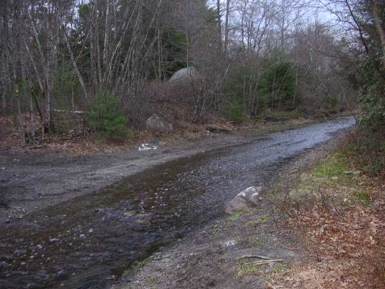

Back to the Future in Douglas State Forest
Run #995, May 2, 2005
Hare: Async
Location: Douglas State Forest, just over MA border from Burrillville.
Weather: 50's, chance of showers.
Present: Basket Boom Boom, Bondo Jovi, Dr. WHO, Dry Foot Fairy, Seamus,
and Ben.
Late Cumers: Tinker, WIPOS, and Fuwangi Boner.
Late Cuming Visitors: Gay Boy and Mas Penis Por Favor (both from La Jolla H3).
Late, Late, Late Cumers: Trail Hoover and Oozing.
Not Present: Just Areola (week #17).
The Run:
Scribe’s Note: After completing this write-up, the run made no sense what-so-ever. Not that RIH3 hashes make any sense anyway, but it could only be understood by a half-eaten bloated rotting maggot-infested water buffalo (or perhaps Bondo). Therefore, the run will be described backwards. It can also be read the other way, in case you envy decaying water buffalo (or perhaps Bondo).
10:39 p.m.: They all left George’s Pizza, stuffed and happy with greasy pizza and beer. Yet another conclusion to a complete waste of an evening.
9:69 p.m.: The 1,000th Run Committee was stalled in negotiations for the location of the hash after a threat of a filibuster by the minority party. In response, Basket will use his political capital and bring in Senator Bill Frist (WHH3 hash name: SMAFLP, a.k.a. Suck My Ass F*cking Liberal P*ssies) and change committee rules to secure total control and power. Surreptitiously, his first order of business will be all songs must be sung in German.
9:39 p.m.: Bondo was stuck in an endless loop: “What, they have Guinness? What, they have Guinness? What, they have Guinness?” Et cetera, ad nauseum.
9:29 p.m.: With much heated antipathy, Dr. WHO demanded that the next time he sings this song, he must wear a ceremonial Indian headdress. Basket will hear from Dr. WHO’s agent.
9:19 p.m.: At George’s Pizza in Pascoag, Basket, Fuwangi, and Dr. WHO, dressed in costume pretending to be the Village People (quite well, by the way), performed the premier hit single “R I H 3” to Dry Foot. The establishment quickly emptied.
8:69 p.m.: Basket offered the visiting Gay Boy and Mas Penis Por Favor his place to say the night, but they took off, missing the On-on-on and wishing never to step foot in the state of Rhode Island again, even though they were technically in Massachusetts. [They were later spotted with BH3 on Wed. clearly needing to recover by hashing with a more sophisticated bunch of wankers.]
8:59 p.m.: Total ratings for the run: +0.69. It would have been higher if there were nubile topless young ladies serving cold Guinness every half mile that the hare said was on trail. Perhaps they were there, but only in the hare’s mind. The rest were upset that Just Areola didn’t show. Hashit: Basket. Why not.
8:49 p.m: Bondo offered visiting Mas Penis Por Favor some homemade warm Bondo brew. She smartly refused, not knowing which orifice it came from. Trying to find the other half of his leg he lost in the shiggy, Dr. WHO waded through the brook hoping it would float out from the swamp. Then he gave up, mumbling something like "Tis only a flesh wound."
8:39 p.m.: Tinker was discovered walking in circles on the bridge where they would circle. A wonderful mix of brews were served. Joining the circle on the bridge, the visitors Gay Boy and Mas Penis Por Favor finally caught up. Mas Penis Por Favor even brought an umbrella. WIPOS was jealous. They said they enjoyed the abundant shiggy, but their shoes looked awfully clean and pants mostly dry. Little did they know, they were supposed to swim through the stuff. Just ask Oozing.
7:69 p.m: The pack running southeast on High St. toward the parked cars met two very late-arriving wankers, Oozing and Trail Hoover. They mumbled something about being sick after Oozing’s previous week’s multiple swan dives into Wood River. Now why would Trail Hoover be sick too? Anyway, they were donning enough Kevlar attire, that nobody could distinguish them from WIPOS. They were even wearing Tinker-approved hash-pants.
7:59 p.m.: Basket marked his territory after the beer check. (It’s unnecessary to describe the gory details.)
7:49 p.m.: After a half-mile of northwest bush-wacking, Dr. WHO was first to reach the beer check. Dry Foot tried to ream the obelisk marking the CT/MA border up his arse. WIPOS arrived and stopped the nightmarish scene. Cans of Irish stouts were opened and contents savored. The beer check remained relatively civilized until Basket christened WIPOS's horn.
7:39 p.m.: Late cumers, WIPOS and Fuwangi finally caught up to the pack at the “BN” along SW Main St., just 100 yards north from the parked cars. Too bad they circumcised the wonderful shiggy.
7:29 p.m.: Basket spotted Trail Hoover and Oozing near the cars, and signaled them toward the beer check. Instinctively, they went the opposite direction. Perhaps they were following the other two Basket horns, compliments of WIPOS and Bondo. However, on this once-in-a-lifetime occasion, the real Basket was correct.
7:19 p.m.: Dry Foot followed the arrow pointing north off the Trunkline Trail and into a swamp. Basket decided to woos out and short-cut trail. Who was the dry foot fairy? No, WHO was not a dry foot fairy, as Dr. WHO followed true trail into the swamp. Async, the hare, and Bondo joined them in wallowing through the wonderful black stinky mire heading north, then circling west. Async broke the silence and said, “the great thing about this black stuff is you don’t know how deep it is.” At that moment, Dry Foot stepped into a 3 foot hole. Async, witnessing this unfortunate event, did the obvious and stepped into the same hole. Brilliant!.
6:69 p.m.: Finding true trail Basket led the small pack southeast along the Trunkline Trail to enjoy miles and miles of abandoned railroad track bed. It became apparent that Async attempted to set a trail in the shape of an areola (see photo). Using state-of-the-art cat-scan technology, MIT researchers were able to capture the mental image of Async's thoughts. The attached photo was his mental image when a researcher said the word "hash." The nipple was pointed out for an added reference, just in case anyone doesn't know what that is. [But I digress] Nevertheless, the attempt was futile. Just Areola was nowhere to be found and is likely still at the airport.
6:59 p.m.: Basket and Dr. WHO led the pack northeast along the Coffeehouse Loop. Dry Foot led Ben into Cedar Swamp. Trail Hoover and Oozing finally arrived at the parked cars. Better never than late.
6:49 p.m. So far, the trail was relatively boring. East along Midstate Trail, after the first two checks, true trail continued straight. No shiggy, no nothing. Pathetic. Late cuming visitors Gay Boy and Mas Penis Por Favor from La Jolla H3 arrived to be greeted by a bunch of empty cars. They bravely (stupidly) followed the arrow marking trail and joined the run.
6:39 p.m.: Basket: “What is this, a walking hash?” WIPOS, Fuwangi, and Tinker arrived late.
6:29 pm.: They waited for another minute, then they were off, heading southeast, crossing the Trunkline Trail, and onto the Midstate Trail.
6:19:69 p.m.: Dr. WHO arrived after golfing. It just got worse.
6:19:00 p.m.: Bondo pulled up. Things couldn’t get any worse than this.
6:09:69 p.m.: Dry Foot arrived. This hash definitely wasn’t looking good.
6:09:00 p.m.: Basket arrived. Things were off to a bad start.
5:69 p.m.: Async was parked alone at Gate 19 along SW Main St. Returning to the spot where Just Areola first hashed, the hare hoped to bring good fortune back to RIH3. Hashing doesn’t get any better than this!
On On
Dry Foot Fairy
A bold rebuttal by Visiting Mas Penis Por Favor:
Dear RI Hashers,
Here in San Diego we have 14 different (yes 14) different hashing kennels.
Your recent write up of the Douglas Wilderness area hash on the evening of May 2, 2005 referred to me and Gay Boy as La Jolla hashers. I'd like to make it perfectly clear that we are not, nor ever have
been La Jolla hashers. It's one of the hashes that one must be invited to and it also happens to take place at the
same timeand day as another hash that we are more fond of r*nning with. So, the names are Gay
Boy from La Jolla and Mas Penis Por Favor but we are from the San Digoe Hash
House Harriers.
Regarding the shoes being dry. Are you kidding? We fell into water all over that soggy rotten treed bog and besides it was raining! How could anyone have dry feet after that? Silly!
Here are two photos that I mananged to take before it got dark.
PS: We'd been in Newport hitting every bar we could find during the day (love the Dogfish Head at Yesterdays) and were
beered out by the time the on, on on was on. Sorry we didn't join you.
Hope to see some of you in SD for July's Red Dress Run.
Mas Penis

True Trail in RI
Gay Boy
Mas Penis Por Favor at Boston Beer Works